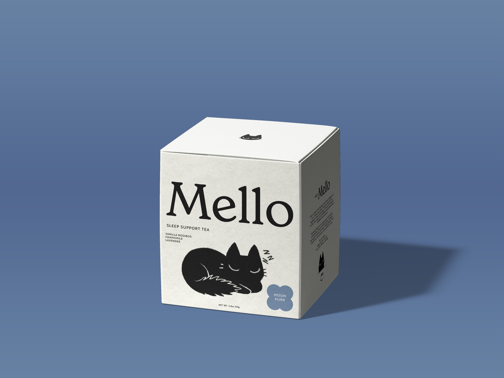
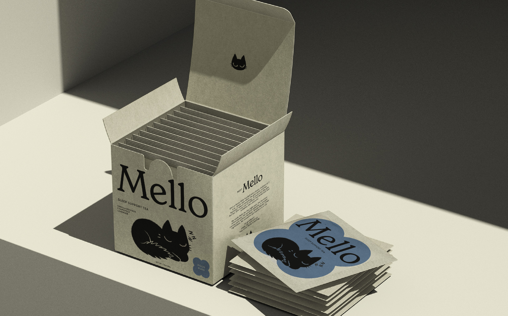
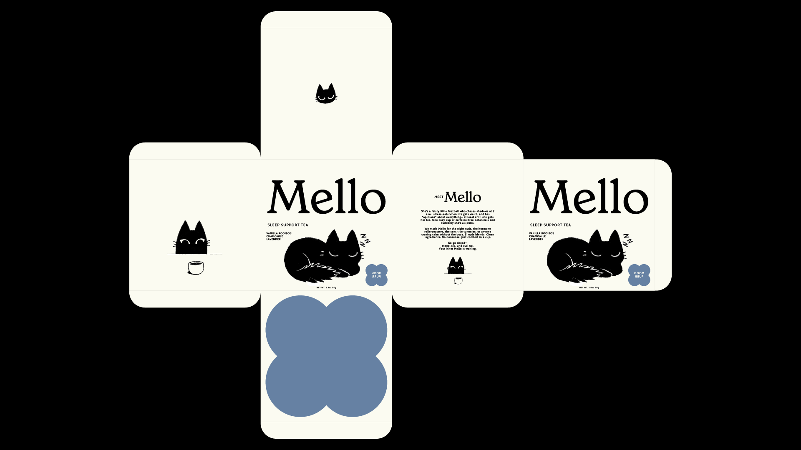
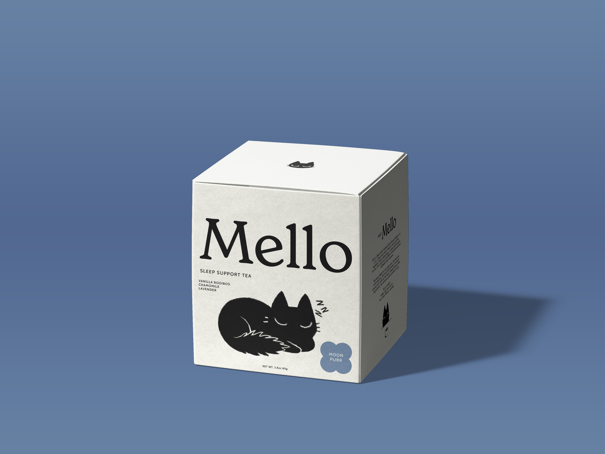
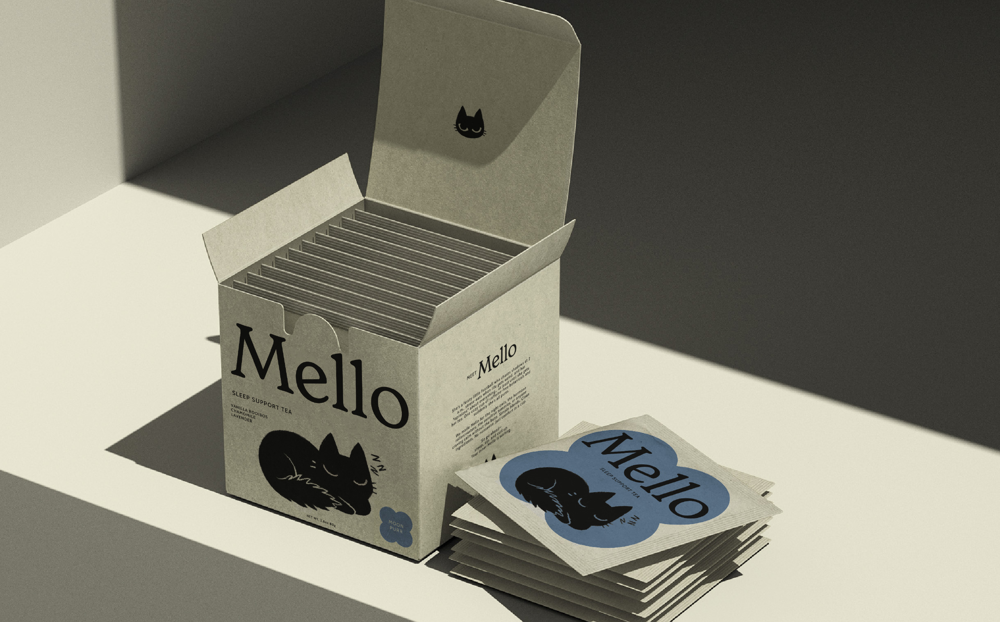
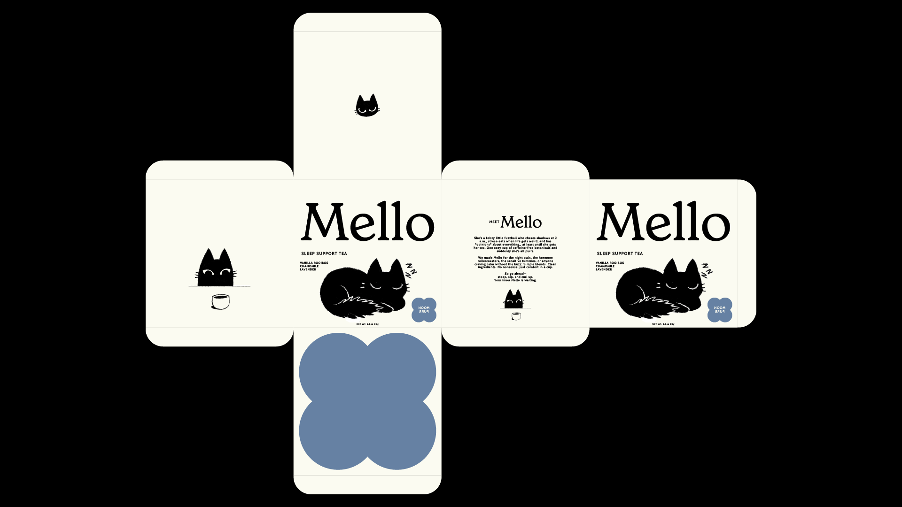

MELLO TEA, 2025
Personal Project, Toronto
Packaging Design / Illustration
PROJECT OVERVIEW
Mello is a wellness tea brand designed to bring comfort and calm to those navigating restless nights, sensitive digestion, and hormonal fluctuations. Built around Mello, a moody, relatable black cat mascot, the brand combines approachable botanical blends with personality-driven visual storytelling.
This project explores how illustration, tone, and thoughtful packaging architecture can transform functional wellness products into cozy, emotional rituals.
BRAND POSITIONING
Promise: Calming, caffeine-free botanical blends for sleep support, digestive comfort, and hormonal balance delivered with warmth, humor, and zero pretense.
Audience: Wellness-curious women aged 20–40 with low-stimulant lifestyles; night owls, sensitive stomachs, and anyone seeking ritual over rush.
Voice: Warm, cheeky, reassuring.
Differentiator: Mello herself. Unlike sterile wellness branding, this fuzzy, emotional cat reflects the messy, human experience of seeking calm. Her shifting expressions across flavors mirror the moods and needs of the people who drink the tea.
VISUAL IDENTITY
The Mascot
Mello is a hand-illustrated black cat with fuzzy edges and big eyes.
Inspired by my own cat with very moody expressive eyes, Mello often carries an unsatisfied look.
Her emotions shift subtly across packaging: sleepy and serene for Moon Purr,
while appearing more impatient and grumpy for Roasty Digest and Raspberry Ease.
She's the brand's emotional anchor, making wellness feel approachable and personal.
PRODUCT LINE
Moon Purr (Sleep)
Chamomile, lavender, vanilla rooibos
For the 2 a.m. shadow-chasers
Roasty Digest (Gut)
Roasted dandelion root, chicory, cinnamon
For sensitive tummies and stress-eaters
Raspberry Ease (Cycle Support)
Raspberry leaf, nettle, lemon balm
For hormone rollercoasters and balance-seekers
DESIGN INTENT
This project challenges the clinical aesthetic dominating wellness packaging. Instead of sterile minimalism or overly earnest messaging, Mello leans into personality, humor, and emotional honesty. The illustrated cat becomes a surrogate for the user (moody, tired, seeking comfort) making the brand feel less like a product and more like a companion.
Every design decision, from the fuzzy edges of the illustration to the restrained color palette, supports the brand's core promise: simple blends, clean ingredients, and comfort without the buzz
 




